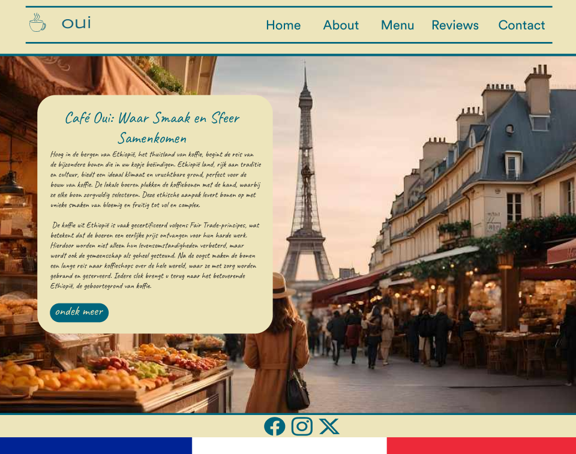
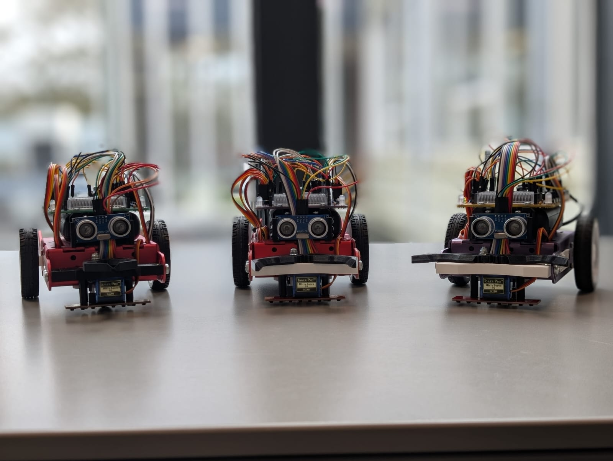
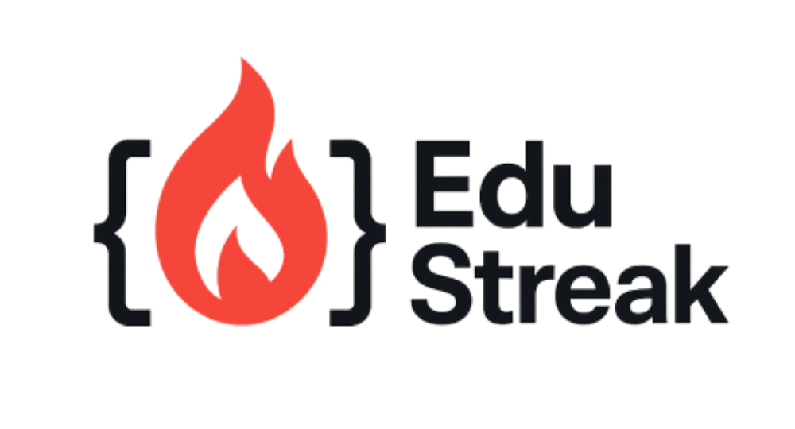

Het project begon met een duidelijke missie: een website ontwikkelen die perfect de sfeer van Café OUI weerspiegelt. Vanaf de eerste ontmoeting met de eigenaar, was het duidelijk hoe belangrijk zijn passie voor koffie en de Franse cultuur was. Dit gaf ons als team veel inspiratie om een unieke en stijlvolle website te maken. In de eerste weken werkten we aan een plan van aanpak en het verzamelen van de eisen en wensen van de opdrachtgever. De ontwerp- en bouwfase was uitdagend maar ook leerzaam. We hebben veel tijd gestoken in het maken van een responsief ontwerp dat gebruiksvriendelijk is, terwijl het de sfeer van een Frans café overbrengt. Dankzij goede communicatie in het team en met de eigenaar hadden we stap voor stap een website gecreëerd die volledig aansloot bij de visie van Café OUI.
Het project voor Gemorskos was een interessante en leerzame ervaring. We werkten aan de opzet van een veilige en gebruiksvriendelijke infrastructuur voor een intranet, waarmee medewerkers en freelancers beter kunnen samenwerken.Ik heb veel geleerd over projectmatig werken, communicatie met een opdrachtgever en het belang van privacy by design. Vooral het vertalen van wensen naar concrete technische oplossingen vond ik leerzaam. Al met al kijk ik terug op een uitdagend, waardevol, maar soms ook wat verwarrend project haha.
Het BattleBots-project was een van de leukste projecten die ik tot nu toe heb gedaan. Samen met mijn groep werkte ik aan het programmeren van onze eigen robots. Het was super leerzaam, maar vooral ook heel leuk om te doen. We werkten in duo's en mijn duo moest de lijnvolg functie maken, die niet altijd helemaal werkte zoals het moest. Onze robot had soms een eigen wil. Zo dacht hij op een gegeven moment dat het witte deel van de tafel de zwarte lijn was, en besloot hij vrolijk een niet-bestaande witte lijn te volgen. Dat leverde frustratie op, maar ook een hoop gelach! Het was echt leuk om te zien hoe onze code en hardware tot leven kwamen.
Voor dit project ontwikkelde mijn projectgoep en ik een mobiele app in React Native waarmee gebruikers hun gewoontes kunnen bijhouden en gemotiveerd blijven met AI-quotes via de Gemini API. De app bevat onder andere een dark/light mode en dagelijkse herinneringen. Ik vond het een leerzaam en leuk project, vooral door het werken met themacontext en AI-integratie. Hoewel we wat problemen hadden met de emulator, heb ik daar juist veel van geleerd. Uiteindelijk werkte alles goed en ben ik trots op het eindresultaat!
